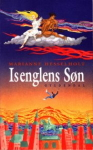

 Isenglens Søn
Lektørudtalelse:
Isenglens søn - Gyldendal - 272 siderDet er lidt svært at skulle en tur til Jorden, når ens far er en djævel og ens mor en lidt genstridig, smuk engel. Selv har begge forældrene været turen igennem efter aftale mellem Vorherre og Satan. Ned på Jorden for at lære menneskene at elske hinanden/ lyve, myrde, voldtage osv. De lander midt i en krig med racisme, nynazisme og flygtninge og ender i Danmark. Erkendelse: der er djævle nok i forvejen, mennesker med den lille indre svinehund. Forældrene vender tilbage til de "højere lag", og da de ikke vil skilles, bliver de anbragt på en lille eksotisk ø. Og så er vi i anden bog, hvor nu 14-årige Pok gerne vil ud af "isolationen", og efter aftale med Gud bliver han sendt til Danmark som en smuk, lyshåret dreng. Vi er i år 2004, og billedet af Danmark er rammende, uhyggeligt sjovt og giver sandelig stof til eftertanke. De arbejdsløse, de overvågede, de anderledes, de angste og "de overmætte". Poks erkendelse: jeg er et menneske på godt og ondt. Det er en flot bog, - pakket ind i en sjov, anderledes og elegant ramme og med synsvinkler, som ikke bare kan snakkes væk. Nogle vil måske kalde bogen for krævende, "så anderledes", men vore gode læsere har også krav på kvalitet, der vender det hele lidt på hovedet - gør det med et smil, og alligevel kombinerer indsigt med en god læseoplevelse. Fra 15 år.
Flemming Dehn.
Uddrag fra kapitlet: I fredens land:
Hovedpersonen Pok er sammen med en gruppe jugoslaviske flygtninge bragt til et asylcenter i Tyskland....pludselig skete der noget.
Det første var en lyd, en voldsom klirren, som af knust glas. Og så fløj det med splinter om ørerne på os, og en byge af små og store sten regnede ned over os.
Børnene skreg, og de voksne styrtede hen til dem og hev dem op fra gulvet og væk. Ind i krogene. Her krøb de sammen.
Mærkeligt nok havde ingen af stenene ramt de små.
Jeg tror slet ikke, nogen af os handlede i lang tid.
Det gik alt sammen så hurtigt og så stilheden bagefter. Lidt efter kom der nogle mennesker, som fik travlt med at sætte pap i vinduerne.
"Indtil videre," sagde de og smilede beroligende og forlod os.
Og så var vi alene igen.
Og det blev aften, og det blev nat, og vi skulle sove.
Jeg sov ikke. Og jeg tror, der var mange, som lå og lyttede ud i stilheden. Efter sære lyde ... efter, vi vidste det ikke selv.
Din mor havde slet ikke sagt noget. Men hun var blevet. Og hun virkede ikke mere så beslutsom. Jeg lå og stirrede ud i mørket.
Mørket, som var totalt nu - de blændede vinduer tillod ikke den mindste stribe lys at trænge ind. Timerne sneglede sig af sted. Det var langt ud på natten, og nu sov de fleste, og deres rolige åndedrag blandede sig med små klynk fra børnene. Det lå jeg og lyttede til og kunne stadig ikke sove.
Pludselig hørte jeg en anden lyd.